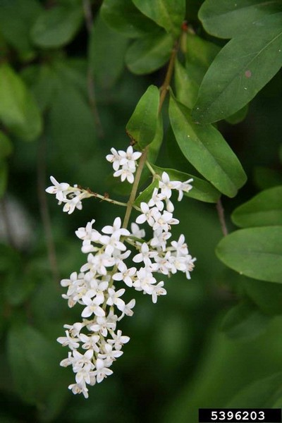
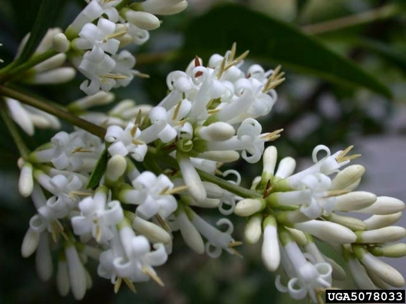
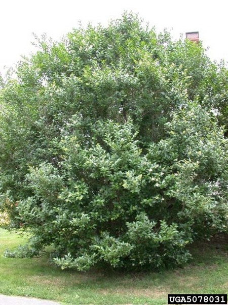

photo: The Dow Gardens Archive, Dow Gardens, Bugwood.org
Common Privet (Ligustrum vulgare)
Robert Vidéki, Doronicum Kft., Bugwood.org |
Nava Tabak, Invasive Plant Atlas of New England, Bugwood.org |
Nava Tabak, Invasive Plant Atlas of New England, Bugwood.org |
{kind=link}
{kind=link}
{kind=link}
Form:
Perennial shrub or small tree with spreading branches, growing 12-15' tall, though it may reach up to 30'. Frequently as wide as it is tall. Trunks usually occur as multiple stems with many long, leafy branches attached at near-right angles. Several species occur, but they are difficult to distinguish.
Leaves:
Opposite, elliptic to ovate, with entire margins, leathery, tough, and 1-2" long.
Flowers:
White, with 4 petals fused into a tube, occurring in dense terminal inflorescences. Very abundant and strongly scented. Bloom in early summer.
Fruits & Seeds:
Abundant, ovoid, containing 1-4 seeds. Ripen in late summer to a dark purple-black and persist into winter. Fruits are poisonous to humans but are food for many birds, which distribute seeds. Mature plants can produce hundreds of fruits.
Similar Species:
Chinese privet (L. sinense) non-native
Japanese privet (L. japonicum) non-native
Tier 2 - Assess As Needed
The size and extent of these species populations are currently being inventoried with limited geographic information available. This survey will assist with identifying future control targets as populations are defined.
Action: The inventory of these plants is ongoing. The approximate number of plants should be recorded keeping in mind population sizes may be highly variable.